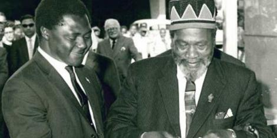

TOM MBOYA
A highly respected late Kenya independence activist

A rare picture of Tom Moya with the late first president of Kenya Mzee Jomo Kenyatta, leading him to a song.
- 1930-1946 Early life & Education
:Tom was born on 15th August 1930 in Kilima mbogo, near the town Thika Kenya. Tom was educated at various schools. In 1942 to 1946 he was lucky enough to go to highschool at different institution including St. Mary's School Yala, Mang'u High school where he passed wel enough. He then enrolled in multiple certificates in different institutions. he later received a scholarship from Britain's Trade Union Congress to attend to Ruskin Colege, University of Oxford where he sturdied industrial Management and after his graduation he returned to Kenya and joined politics. - 1950-1955 Political Life:
Mboya's political life started immediately after he was employed at Nairobi City Council as a sanitary inspector in 1950. During his stint at Nairobi City Council, Mboya was elected as African Staff Assocition's president and immediately embarked on moulding the association into a trade union but later resigned. Later during the Mau Mau war for independence, the leader Jomo Kenyatta was arrested and other leaders of the Kenya African Union(KAU) and then, he was asked to take over. However the government banned KAU - 1956 Dived into politics leading Kenya to independence
He was then elected as Secretary General of Kenya Federation of Labour(KFL). In this role he gave speeches aganist British atrocities in Kenya. then after in 1956 he retured to United Kingdom and at this time the colonial government allowed afican to take part in the legislative and so he was elected as the African Elected Members Organisation and continued to campaign for independence. Later on in 1958 he was elected as the Conference chairman at the age 28. He continued leading his people to independence by organizing several stricks participating Airlift African project to help in educating more africans. In 1961 Jomo Kenyatta was released and together with Oginga Odinga they formed Kenya African National Union that led the country to Independence.
Tom Mboya was a great man whose contribution to independence and determination should not be forgoten at all. This tribute is majorly for remembrance of the grate effort he put to free Kenya from colonisation.